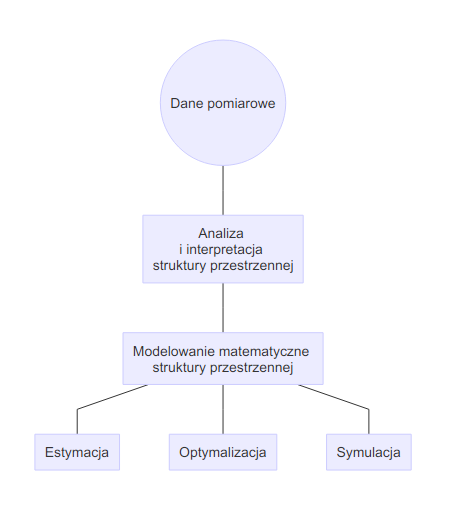
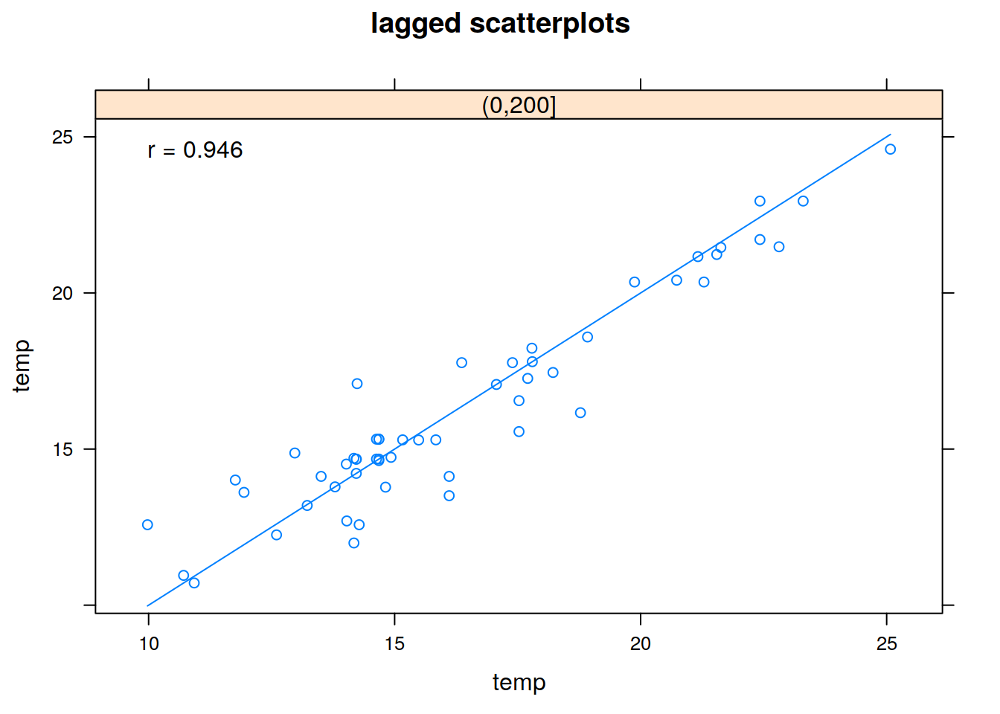
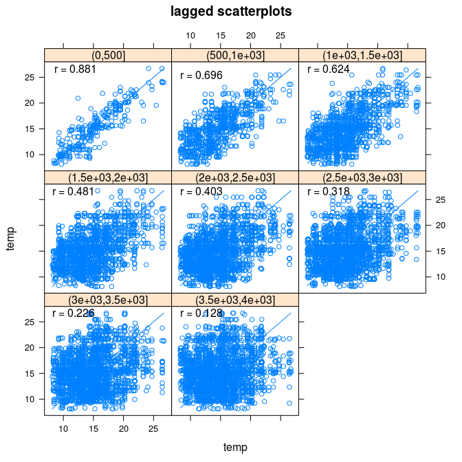
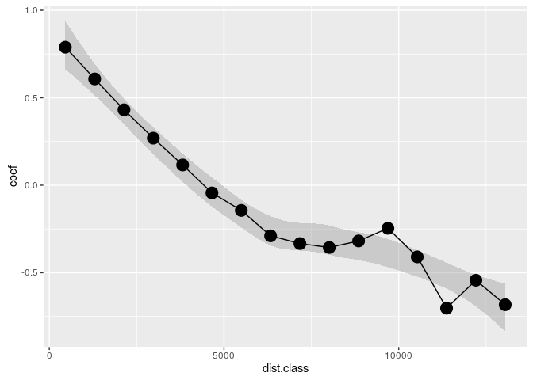
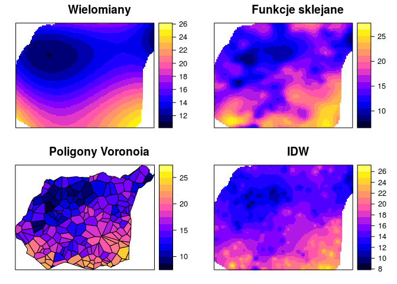
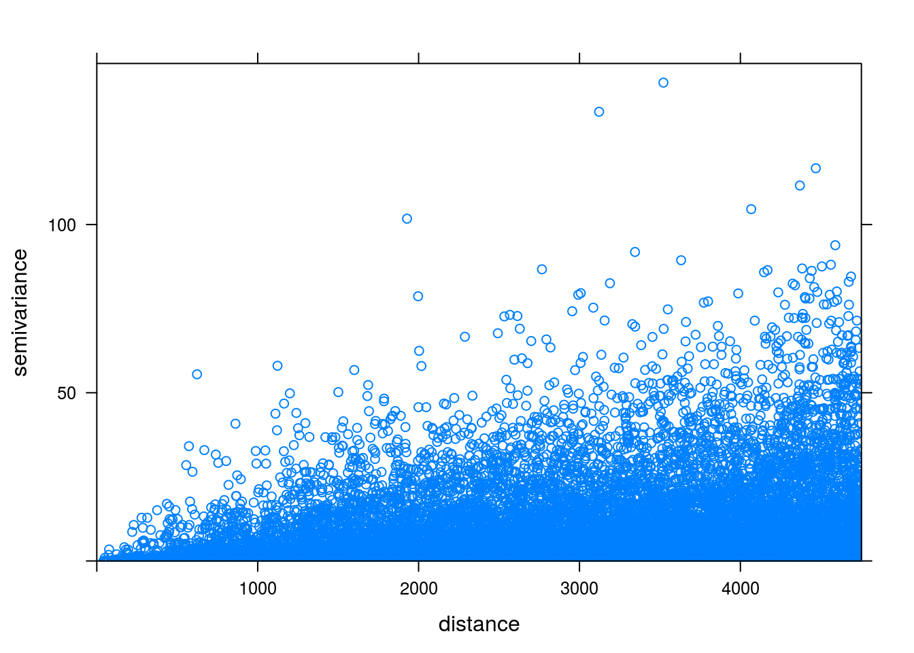
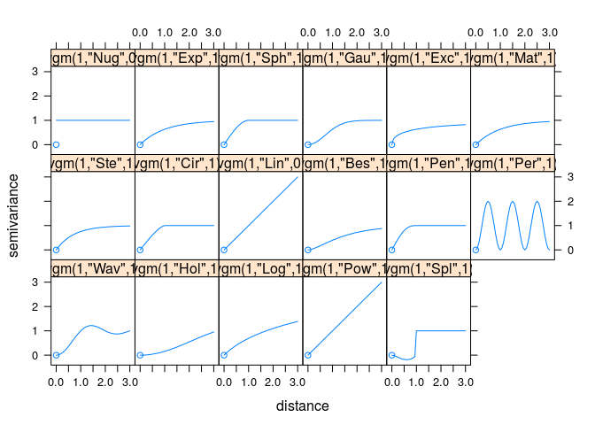

Rodział 6 … - geostatystyka
6.0.1 Modele statystyczne
- Parametry modeli są określane w oparciu o teorię prawdopodobieństwa. Dodatkowo wynik estymacji zawiera oszacowanie błędu. Np.:
- Kriging
- Modele regresyjne
- Modele bayesowe
- Modele hybrydowe
6.1 Geostatystyka - prolog
6.1.1 Geostatystyka
- Zbiór narzędzi statystycznych uwzględniających w analizie danych ich przestrzenną i czasową lokalizację, a opartych o teorię funkcji losowych.
6.1.2 Geostatystyka | Funkcje
- Identyfikacja i modelowanie struktury przestrzennej/czasowej zjawiska
- Estymacja - szacowanie wartości badanej zmiennej w nieopróbowanym miejscu i/lub momencie czasu
- Symulacja - generowanie alternatywnych obrazów, które honorują wyniki pomiarów i strukturę przestrzenną/czasową zjawiska
- Optymalizacja próbkowania/sieci pomiarowej
6.1.3 Geostatystyczna analiza danych

6.1.4 Geostatystyka | Dane wejściowe
- Wystarczająca duża liczba punktów (minimalnie >30, ale zazwyczaj więcej niż 100/150)
- Są reprezentatywne
- Są niezależne
- Były stworzone używając stałej metodyki
- Są wystarczająco dokładne
6.1.5 Geostatystyka | Podstawowe etapy
- Zaprojektowanie sposobu (typu) próbkowania oraz organizacji zadań
- Zebranie danych, analiza labolatoryjna
- Wstepna eksploracja danych, ocena ich jakości
- Modelowanie semiwariogramów na podstawie dostępnych danych
- Estymacja badanej cechy
- Porównanie i ocena modeli
- Stworzenie wynikowego produktu i jego dystrybucja
6.2 Przestrzenna kowariancja, korelacja i semiwariancja
6.2.1 Przestrzenna kowariancja, korelacja i semiwariancja | Założenia
- Przestrzennej ciągłości - przestrzenna korelacja między zmienny w dwóch lokalizacjach zależy tylko od ich odległości (oraz czasem kierunku), lecz nie od tego gdzie są one położone
- Stacjonarności - średnia i wariancja są stałe na całym badanym obszarze
6.2.2 Przestrzenna kowariancja, korelacja i semiwariancja
- \(u\) - wektor współrzędnych
- \(z(u)\) - badana zmienna jako funkcja położenia - inaczej określany jako ogon (ang. tail)
- \(h\) - lag - odstęp pomiędzy dwoma lokalizacjami
- \(z(u+h)\) - wartość badanej zmiennej odległej o odstęp \(h\) - inaczej określany jako głowa (ang. head)
6.2.3 Przestrzenna kowariancja, korelacja i semiwariancja
- Kowariancja i korelacja to miary podobieństwa pomiędzy dwoma zmiennymi
- Przenosząc to na aspekt przestrzenny, badamy jedną zmienną ale pomiędzy dwoma punktami odległymi od siebie o pewien dystans (okreslany jako lag)
- W efekcie otrzymujemy miarę podobieństwa pomiędzy wartością głowy i ogona
- Trzecią miarę charakteryzującą relację między obserwacjami odległymi o kolejne odstępy jest semiwariancja
- Z praktycznego punktu widzenia, semiwariogram jest preferowaną miarą relacji przestrzennej, ponieważ wykazuje tendencję do lepszego wygładzania danych niż funkcja kowariancji
- Dodatkowo, semiwariogram jest mniej wymagający obliczeniowo
- Jednocześnie, dla potrzeb interpretacji relacji kowarancja i korelacja przestrzenna nadaje się nie gorzej niż semiwariancja

6.2.4 Wykres rozrzutu z przesunięciem
hscat(temp~1, punkty, breaks=seq(0, 4000, by=500))
6.2.5 Autokowariancja
- Autokowariancja pokazuje jak mocno są ze sobą powiązane przestrzennie wartości pary obserwacji odległych od siebie o kolejne przedziały
kowario <- variogram(temp~1, punkty, covariogram = TRUE)
plot(kowario)
6.2.6 Autokorelacja
- Autokorelogram jest wykresem pokazującym jedną z miar autokorelacji (np. I Morana lub C Geary’ego) w stosunku do odległości
wsp <- coordinates(punkty)
kor <- correlog(wsp, punkty$temp)
kor <- as.data.frame(kor)
ggplot(kor, aes(dist.class, coef)) + geom_smooth(linetype=0) + geom_line() + geom_point(size=5)
6.2.7 Semiwariancja
- Zmienność przestrzenna może być określona za pomocą semiwariancji. Jest to połowa średniej kwadratu różnicy pomiędzy wartościami badanej zmiennej w dwóch lokalizacjach odległych o wektor \(h\) \[ \gamma(h) = \frac{1}{2}E[(z(s) - z(s+h))^2] \]
6.2.8 Określenie występowania autokorelacji przestrzennej | Chmura semiwariogramu
- Jeżeli w badanej próbie mamy \(n\) obserwacji oznacza to, że możemy zaobserwować \(\frac{1}{2}n(n-1)\) par obserwacji
- Każda para obserwacji daje nam informacje o semiwariancji występującej wraz z odległością
- Semiwariancję można zaprezentować na wykresie zwanym chumrą semiwariogramu
6.2.9 Semiwariancja | Przykładowe obliczenia
odl <- dist(coordinates(punkty)[c(1, 2), ])
gamma <- 0.5 * (punkty$temp[1] - punkty$temp[2])^2
gamma## [1] 162.26286.2.10 Określenie występowania autokorelacji przestrzennej | Chmura semiwariogramu
vario_cloud <- variogram(temp~1, punkty, cloud=TRUE)
plot(vario_cloud) 
6.2.11 Określenie występowania autokorelacji przestrzennej | Chmura semiwariogramu
vario_cloud_sel <- plot(variogram(temp~1, punkty, cloud=TRUE), digitize=TRUE)
plot(vario_cloud_sel, punkty) 6.2.12 Semiwariogram | Charakterystyka struktury przestrzennej
- Semiwariogram to wykres pokazujący relację pomiędzy odległością a semiwariancją
- Jest to uśrednieniem semiwariancji dla kolejnych odstępów (lagów)
- W oparciu o semiwariogram empiryczny możemy następnie dopasować do niego model/e
\[ \hat{\gamma}(h) = \frac{1}{2N(h)}\sum_{i=1}^{N(h)}(z(s_i) - z(s_i+h))^2 \]
gdzie \(N(h)\) oznacza liczbę par punktów w odstępie \(h\)
6.2.13 Semiwariogram
- Nugget - efekt nuggetowy - pozwala na określenie błędu w danych wejściowych oraz zmienności na dystansie krótszym niż pierwszy odstęp
- Sill - semiwariancja progowa - oznacza wariancję badanej zmiennej
- Range - zasięg - to odległość do której istnieje przestrzenna korelacja
6.2.14 Semiwariogram | Rules of thumb
- W każdym odstępie powinno się znaleźć co najmniej 30 par punktów
- Maksymalny zasięg semiwariogramu (ang. cutoff distance) to 1/2 pierwiastka z badanej powierzchni (inne źródła mówią o połowie z przekątnej badanego obszaru/jednej trzeciej)
- Liczba odstępów powinna nie być mniejsza niż 10
- Optymalnie maksymalny zasięg semiwariogramu powinien być dłuższy o 10-15% od zasięgu zjawiska
- Optymalnie odstępy powinny być jak najbliżej siebie i jednocześnie nie być chaotyczne
- Warto metodą prób i błędów określić optymalne parametry semiwariogramu
- Należy określić czy zjawisko wykazuje anizotropię przestrzenną
6.2.15 Semiwariogram | Obliczenia pomocnicze
- Liczba par obserwacji
0.5*length(punkty)*(length(punkty)-1)## [1] 31626- Połowa pierwiastka powierzchni
pow <- area(granica)
as.vector(0.5*sqrt(pow))## [1] 3980.472- Powierzchnia zajmowana przez jedną próbkę
pow_pr <- area(granica)/length(punkty)
pow_pr## 0
## 251494.6- Średnia odległość między punktami
sqrt(pow_pr)## 0
## 501.49246.2.16 Semiwariogram | Maksymalny zasięg semiwariogramu (ang. Cutoff distance)
- Maksymalny zasięg semiwariogramu (ang. Cutoff distance) jest domyślnie wyliczany w pakiecie
gstatjako 1/3 z najdłuższej przekątnej badanego obszaru
vario_par <- variogram(temp~1, punkty)
vario_par## np dist gamma dir.hor dir.ver id
## 1 131 218.6119 1.424513 0 0 var1
## 2 312 490.7338 2.902181 0 0 var1
## 3 516 797.7160 4.558657 0 0 var1
## 4 683 1114.7117 4.659557 0 0 var1
## 5 849 1433.5720 6.429404 0 0 var1
## 6 965 1743.1558 7.539542 0 0 var1
## 7 1103 2057.9031 7.622834 0 0 var1
## 8 1246 2370.6101 8.663066 0 0 var1
## 9 1219 2690.1356 9.657865 0 0 var1
## 10 1343 3005.8324 10.384925 0 0 var1
## 11 1377 3324.7716 11.179461 0 0 var1
## 12 1432 3635.2805 11.959684 0 0 var1
## 13 1485 3952.0183 13.396273 0 0 var1
## 14 1494 4268.2314 14.485038 0 0 var1
## 15 1478 4585.7878 15.256081 0 0 var1plot(vario_par, plot.numbers=TRUE)
vario_par <- variogram(temp~1, punkty, cutoff = 4000)
plot(vario_par)
6.2.17 Semiwariogram | Odległość między przedziałami (ang. Interval width)
- Domyślnie to maksymalny zasięg semiwariogramu podzielony przez 15 dahe odległość między przedziałami (ang. Interval width)
vario_par <- variogram(temp~1, punkty, cutoff = 1000, width = 250)
plot(vario_par)
6.3 Anizotropia
6.3.1 Anizotropia struktury przestrzennej
- W wielu rzeczywistych sytuacjach, wartość cechy zależy nie tylko od odległości, ale także od kierunku
6.3.2 Mapa semiwariogramu
- Mapa semiwariogramu (powierzchnia semiwariogramu) służy do określenia czy struktura przestrzenna zjawiska posiada anizotropię, a jeżeli tak to w jakim kierunku
- Na podstawie mapy semiwariogramu identyfikuje się parametry potrzebne do zbudowania semiwariogramów kierunkowych
vario_map <- variogram(temp~1, punkty, cutoff=4000, width=400, map=TRUE)
plot(vario_map, threshold=30) # co najmniej 30 par punktów
6.3.3 Mapa semiwariogramu | 3D
plot3D(raster(vario_map$map), col=rainbow)6.3.4 Semiwariogramy kierunkowe | Kierunki
- W przypadku, gdy zjawisko wykazuje anizotropię przestrzenną, możliwe jest stworzenie semiwariogramów dla różnych wybranych kierunków
- Przykładowo, dla argumentu alpha = c(0, 45, 90, 135) cztery główne kierunki to 0, 45, 90 i 135 stopni. Oznacza to, że dla kierunku 45 stopni brane pod uwagę będą wszystkie pary punktów pomiędzy 22,5 a 67,5 stopnia.
vario_kier <- variogram(temp~1, punkty, alpha = c(0, 45, 90, 135))
plot(vario_kier)
6.3.5 Semiwariogramy kierunkowe | Kierunki
vario_kier <- variogram(temp~1, punkty, alpha = c(60, 105, 150, 195))
plot(vario_kier)